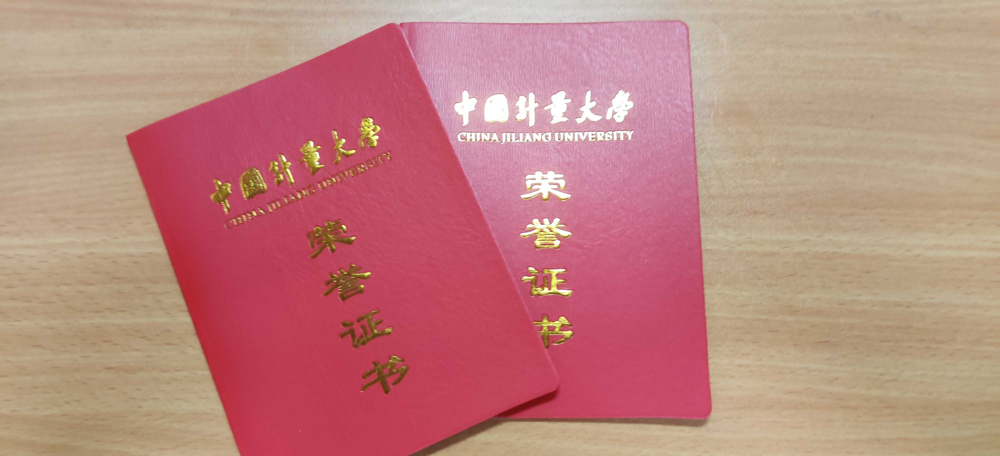
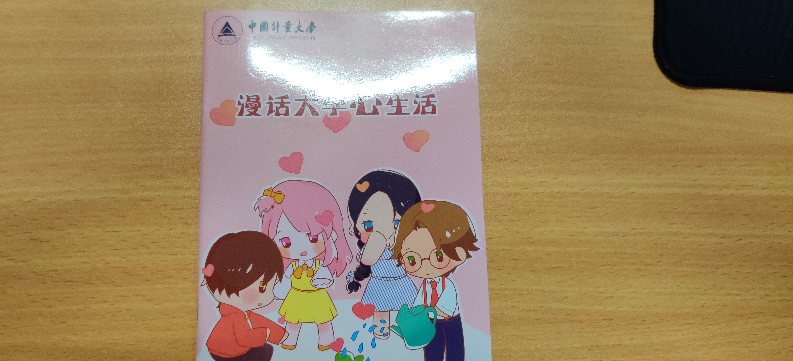

个人信息

我的名字叫xxx，来自浙江金华，故乡永康。今年21岁了，喜欢打篮球，大学就读于中国计量大学，学的是计算机。
平时的时候喜欢打游戏，偶尔会出去逛一逛，喜欢美食，经常去一些网红小吃店，
比如胖哥俩，浅草屋寿司等。这里特别说一下周边的和达城有一家特别好吃的欧巴年糕。
我小学在永康的中山小学读，那是一个美丽的小山村，我初中在隔壁县的东阳读书，那是一个很严格的中学，老师很负责。大学是中国计量学院大学。

获得过三好学生，二等奖学金等奖项。
大一的时候参加过心理协会，和社团一起编了一本漫画心理书。
我喜欢打篮球，经常和小伙伴一起玩。